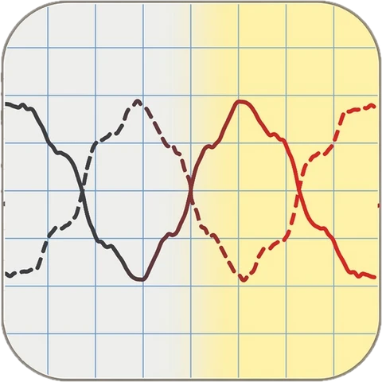
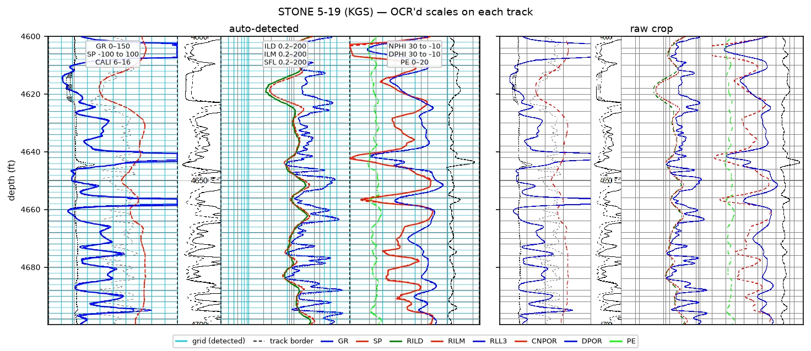
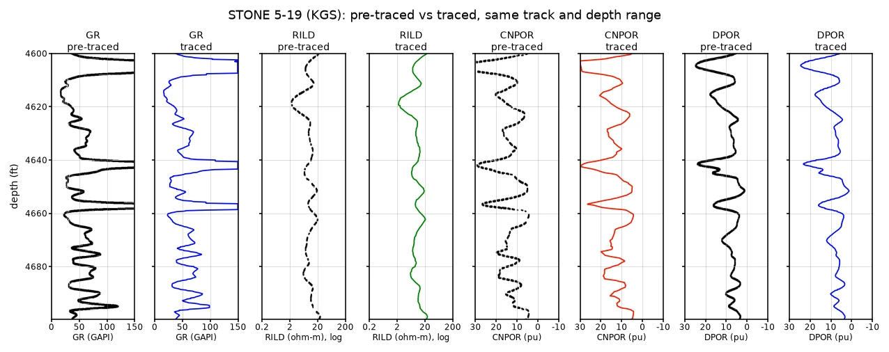
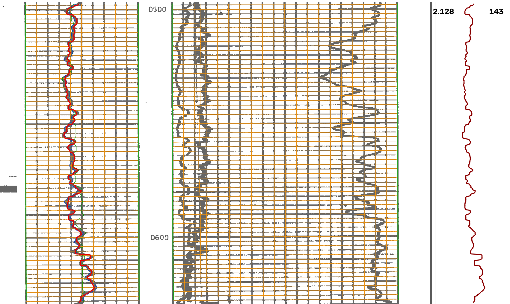
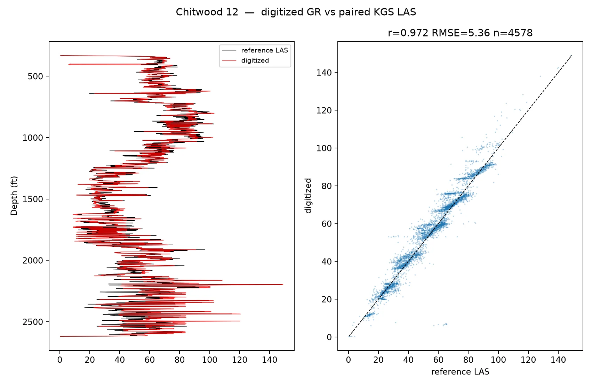
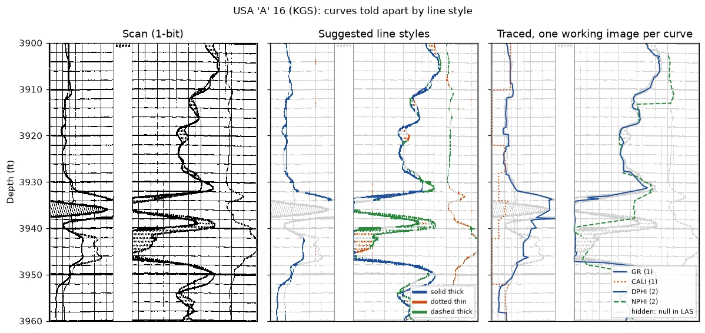
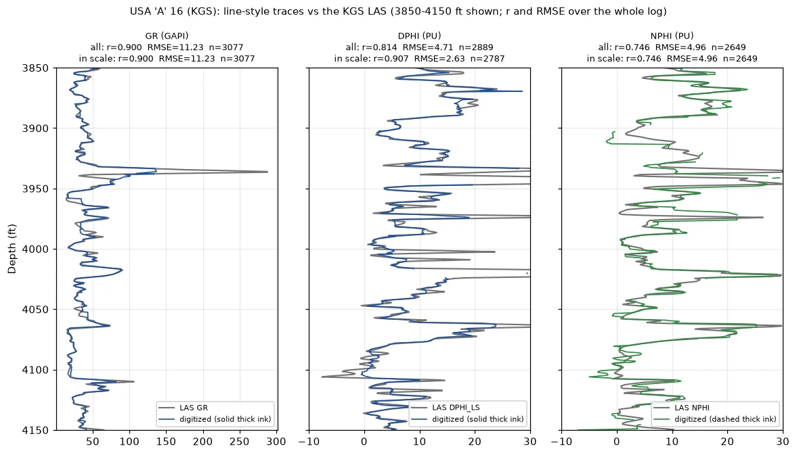
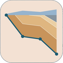

Python · Well-log prints
pyLogDigitizer
pyLogDigitizer is a machine-learning-assisted digitizer that turns well-log image scans, and digital-print PDFs, into LAS files, with a local browser app to check and fix every step. Nothing leaves your machine.

Overview
Many older wells exist only as printed logs. pyLogDigitizer does the tedious parts of digitizing them: it finds the tracks, grid and depth numbers, reads the curve names and scales from the header, tells the curves apart and traces each one into a LAS file. On colour scans the ink colour separates the curves; on black-and-white scans their line style does.
The package is under active development. Many functions are experimental and not fully validated; check the traces before using the results.
Installation
Requires Python 3.10 or newer. From PyPI:
pip install pylogdigitizeror from the conda-forge repository with conda:
conda install pylogdigitizerFrom GitHub (latest development version):
pip install git+https://github.com/GeoLarryLai/pyLogDigitizeror from a local clone:
git clone https://github.com/GeoLarryLai/pyLogDigitizer
cd pyLogDigitizer
pip install -e .Installing from source builds the Rust tracer and needs a Rust toolchain. Without it everything still works, only slower.
What it can do
Colour scans
Tell the curves apart by ink colour on colour image scans.
Black-and-white scans
Tell the curves apart by line style: solid, dashed or dotted, thin or thick.
ML-assisted layout and header
A bundled U-Net (a small neural network) sorts every pixel of a scan into paper, grid, curve or text so tracing follows only curve ink, and deep-learning OCR reads curve names and scales from the header. Both are pretrained, run on an ordinary computer with no training per file, and can be retrained on your own scans.
LAS out
Write LAS 2.0 at 0.5 ft by default, or any depth step you type, never smoothed; off-scale stretches are read on the backup scale where they wrap back in.
Vector and mixed PDFs
Vector PDFs (curves stored as lines, not pixels) are detected automatically and read straight from the file, with no tracing; mixed PDFs take the header from the PDF text and trace the curves (experimental).
It opens TIFF, PNG, JPEG and PDF, plus an optional LAS file as a reference. Scanned PDFs are read from the image on the first page; digital-print PDFs that still carry vector curves are read straight from their line drawings (experimental). Multi-page files use only the first page, except vector PDFs, where the page with the curves is found on its own.
Limitations. It works best on colour scans. Black-ink scans have higher uncertainty, since there is no colour to say which stroke belongs to which curve. It needs a readable header and printed scales (or you type them in the app), and so far it has been tested on Kansas Geological Survey style sheets.
Examples
STONE 5-19, colour raster. A triple combo written by plotting software and stored as pixels only, so every curve is recovered from its coloured ink.
Data: STONE 5-19, BEREXCO, LLC., API 15-055-22611, Finney County, Kansas; a crop of the colour log scan 600699.tif and its LAS, from the KGS well page.


Challenging examples: black-and-white ink scans. Older scans are harder: with no colour, crossing or touching curves are told apart only by their line style, so the traces carry more uncertainty. Where one curve’s dashes are hidden under another curve’s stroke, those depths are left empty in the LAS rather than filled with the other curve’s values.
Data: Chitwood 12, Lion Oil Co., API 15-151-10469, Pratt County, Kansas; scan 260245.tif and its LAS, from the KGS well page.


Data: USA ‘A’ 16, Helmerich and Payne, Inc., API 15-055-20536, Finney County, Kansas; a crop of scan 4342.tif and its LAS, from the KGS well page.


All example scans and LAS files are from the Kansas Geological Survey. The source of this material is the Kansas Geological Survey website at http://www.kgs.ku.edu/. All Rights Reserved. Notebook 06 downloads its vector PDF and LAS on demand from the Illinois Basin – Decatur Project (credit: Illinois State Geological Survey, IBDP, U.S. Department of Energy; doi:10.18141/1854144; IBDP dataset license); they are not stored in the repository, and that example data is for non-commercial use only.
Interactive app
pylogdigitizer-appRun it in a folder with your scans. It opens a local browser app that walks a scan through five tabs: open the scan, check tracks and depth, check the curves and their OCR’d header and scales, trace and fix, then check the logs beside the scan and save the LAS.
Notebooks
- 01 Black-and-white scans traced automatically, then with a few saved clicks.
- 02 Train the optional U-Net cost map on paired KGS wells and batch-digitize.
- 03 Retrain the bundled ink segmenter (optional).
- 04 STONE 5-19 colour scan to LAS.
- 05 USA ‘A’ 16 black-and-white scan to LAS by line style.
- 06 IBDP CCS1: a 12-curve vector PDF read without tracing, checked against its LAS.
Citation
Lai, L.S.-H. (2026) pyLogDigitizer (version 0.4.0). Zenodo, https://doi.org/10.5281/zenodo.24166606
All versions (concept DOI): https://doi.org/10.5281/zenodo.23832013. The header Zenodo button and the projects-page card keep the concept DOI, which already resolves. pyLogDigitizer is under the GNU Affero General Public License 3.0 or later.

pyBasinSubs 1-D and 2-D backstripping and basin analysis, in a local browser app or notebooks.